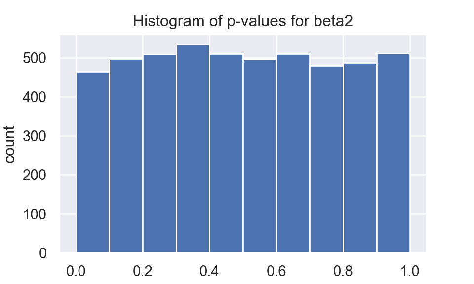

A \(p\)-value, \(p(\mathbf{X})\), is a test statistic, a type of random variable, satisfying \(0\le p(\mathbf{x}) \le 1\) for every sample point \(\mathbf{x}\).
A \(p\)-value is valid if, \(\forall \theta \in \Theta_0\) and \(0\le \alpha \le 1\).
\[\begin{equation} P(p(\mathbf{X}) \le \alpha |\theta)\le \alpha \tag{1.1} \end{equation}\]
Hence by definition, if \(H_0\) is simple, such as \(H_0:\theta=\theta_0\), CDF of a valid \(p\)-value is \(P(p(\mathbf{X}) \le \alpha|\theta_0) = \alpha\). Recall that a random variable \(T\) follows uniform(0,1) distribution if and only if \(P(T\le t) = t, \quad \forall t\in[0,1]\). Hence when null hypothesis is simple and true, \(p\)-value statistic follows uniform(0,1) distribution.
In ordinary least square regression
\[\begin{equation} \boldsymbol{y} = \boldsymbol{X\beta} + \boldsymbol{e} \tag{2.1} \end{equation}\]
\[\begin{equation} e_i \sim_{\text{i.i.d}} N(0,1) \tag{2.2} \end{equation}\]
\[\begin{equation} \boldsymbol{X} = \begin{bmatrix} 0 & \sqrt{10}\\ 1 & \sqrt{11}\\ 2 & \sqrt{12}\\ 3 & \sqrt{13}\\ 4 & \sqrt{14}\\ 5 & \sqrt{15}\\ 6 & \sqrt{16}\\ 7 & \sqrt{17}\\ 8 & \sqrt{18}\\ 9 & \sqrt{19}\\ \end{bmatrix} \tag{2.3} \end{equation}\]
\[\begin{equation} \boldsymbol{\beta} = \begin{bmatrix} \beta_1\\ \beta_2 \end{bmatrix} = \begin{bmatrix} 5\\ 0 \end{bmatrix} \tag{2.4} \end{equation}\]
In each iteration, I simulate 100 \(e_i\), then use (2.1) to get \(\boldsymbol{y}\). I use statsmodels package to calculate \(p\)-value of each \(\boldsymbol{\beta}\). I only keep \(p\)-value of \(\beta_2\).
I repeat same process for 5000 times, then plot the histogram based on \(p\)-value of \(\beta_2\).
Histogram of \(p\)-value for \(\beta_2\) seems to be unifrom(0,1).
import numpy as np
import pandas as pd
import matplotlib.pyplot as plt
import statsmodels.api as sm
np.random.seed(515)
X1 = np.array(np.arange(0,10,1))
X2 = np.array(np.arange(10,20,1))
X2 = np.sqrt(X2)
X = np.column_stack((X1,X2))
betas = np.array([5,0])
pvalues = []
for i in range(5000):
e = np.random.normal(size = 10)
Y = X @ betas + e
model = sm.OLS(Y,X)
model_fit = model.fit()
pvalues.append(model_fit.pvalues[1])
df = pd.DataFrame(pvalues)
plt.figure()
fig = df.hist()
plt.title("Histogram of p-values for beta2")
plt.ylabel("count")
plt.show()
Casella and Berger (2001)
Casella, George, and Roger Berger. 2001. Statistical Inference. Textbook Binding; Duxbury Resource Center.